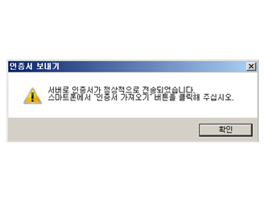

사이버창구 이용가이드
공인인증서 이용안내
-
STEP 1. MOBILE
어플리케이션 실행
-
STEP 2. MOBILE
메인화면에서 인증센터에서 설치
-
STEP 3. MOBILE
공인인증서 가져오기를 터치
-
 STEP 4. PC
3가지 방법 중 선택
STEP 4. PC
3가지 방법 중 선택
- ① 메트라이프 홈페이지로 접속하여 사이버 창구 이용
- ② 위와 같이 검색된 내용 중 ‘사이버창구’ 바로 클릭
- ③ 주소창에 http://cyber.metlife.co.kr 바로 입력
-
STEP 5. PC
사이버창구 로그인페이지 하단의 공인인증서 내보내기 클릭
-
STEP 6. PC
공인인증서 내보내기를 클릭
-
STEP 7. PC
공인인증서 선택 후 공인인증 비밀번호 입력
-
STEP 8. PC
스마트폰에서 인증번호를 확인 인증번호 입력
-
STEP 9. MOBILE, PC
스마트폰에 표시된 인증번호 확인
-
STEP 10. MOBILE, PC
스마트폰의 인증번호를 PC의 인증서 인증번호란에 입력
-

STEP 11. MOBILE, PC
확인 클릭 후 인증서 전송 완료
-
STEP 12. MOBILE
전송된 공인인증서 비밀번호를 입력
-
STEP 13. MOBILE, PC
인증서 가져오기가 완료되었습니다.